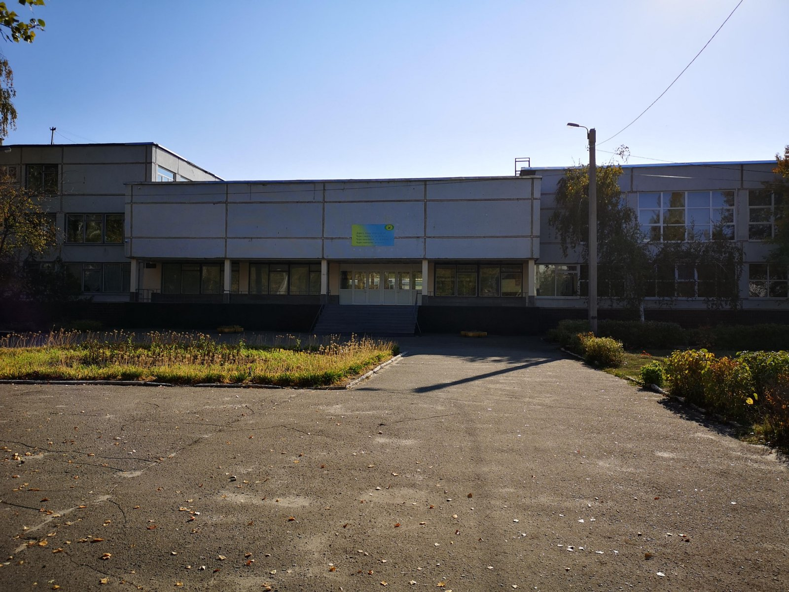

Основні відомості про школу, яку я закінчила
У 2009 році, у віці 6 років, я пішла до першого класу Харківської гімназії №55, яка знаходиться у місті Харкові, Київський район (вул. Валентинівська, 13-Д).
У молодших класах я вчилася на відмінно. У нас була дуже гарна викладач (класний керівник) Юлія Вікторівна, яка дуже добре навчала і відносилась до мене і моїх однокласників.
У середній школі ми перейнли до нового класного керівника, на цей раз її звали Тетяна Миколаївна. вона була вчителькою російської мови і зарубіжної літератури.
На цей раз нам не так пощастило. Відносили з Тетяною Миколаївною в мене були не найкращі. Я почала вчитися не так гарно, як у молодших класах, але все ще була хорошисткою.
У середній школі був, напевно найскладніший період, бо саме у цей час діти починають дорослішати і змінюватися у поведінці.
Після 9 класу ми знову перейшли до нового вчителя, бо вступили у старшу школу. На цей раз нашою класною керівничкою стала Олена Вікторівна, вчитель математики.
10 і 11 клас був складним, бо ми були математичним класом і уроки алгебри та геометрії в нас були кожного дня. І майже завжди в день було по 2 уроки математики.
Але завдяки великій кількості математики у школі я непогано змогла сдати ЗНО з цього предмету, бо, взагалі, я не дуже люблю матемактику.
